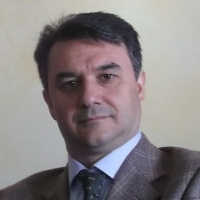

Andrea De Lucia
Code Smells Identification and Refactoring Automation: Challenges, Solutions, and Open Issues

Abstract
During software evolution change is the rule rather than the exception. A software system evolves as changes in the environment and requirements are incorporated in it. Unfortunately, due to strict deadlines programmers do not always have a bunch of time to make sure that the applied changes conform to good design practices. Thus, generally software quality decreases in consequence of changes, making future software maintenance more difficult. In such cases software refactoring is recommended since several empirical studies provide evidence that low design quality is generally associated with lower productivity, greater rework, and more effort for developers.
Refactoring has been defined as the process of changing a software system in such a way that it does not alter the external behavior of the code, yet improves its internal structure. Different refactoring operations might improve different quality aspects of a system. As an example, in Object-Oriented systems low-cohesive classes, i.e., classes implementing unrelated responsibilities, can be removed by splitting their methods into different classes that group together strongly related responsibilities and are easier to comprehend and maintain (this operation is known as Extract Class Refactoring).
Despite its advantages, performing refactoring operations in large and nontrivial software systems can be very challenging. First, identifying refactoring opportunities in large systems is very difficult, as the design flaws are not always obvious. In general refactoring opportunities can be identified by searching for code smells, i.e., symptoms of poor design and implementation choices that may hinder code comprehension, and possibly increase change- and fault-proneness. Second, when a design problem has been identified, it is not always easy to apply the correct refactoring operation to solve it. All these observations highlight the need for refactoring recommendation systems supporting the software engineer in (i) identifying refactoring opportunities (i.e., design flaws) and (ii) designing and applying a refactoring solution.
This tutorial aims at providing an overview on the state of the art and the existing challenges in the field of identifying code smells and automating refactoring operations. Benefits and side effects of refactoring will be also discussed. This tutorial is intended for a variety of people, ranging from project managers, practitioners, to researchers and prospective students.
Speaker's Bio
Andrea De Lucia received the Laurea degree in Computer Science (cum laude) from the University of Salerno, Italy, in 1991, the M.Sc. degree in Computer Science from the University of Durham, UK, in 1996, and the Ph.D. in Electronic Engineering and Computer Science from the University of Naples "Federico II", Italy, in 1996. He is a full professor of software engineering at the Department of Management and Information Technology, head of the Software Engineering Lab, and the Director of the International Summer School on Software Engineering, at the University of Salerno, Italy. He was also the Coordinator of the PhD program in Management & Information Technology at the University of Salerno. Previously, he was with the Department of Engineering at the University of Sannio, Italy, where he was member of the executive board of the Research Centre on Software Technology (RCOST) and member of the University Administrative Council.
Prof. De Lucia has coordinated and has been involved in several research and technology transfer projects conducted in cooperation with industrial partners. His research interests include software maintenance and testing, program comprehension, reverse engineering and reengineering, global software engineering, traceability management, empirical software engineering, search-based software engineering, software configuration management, workflow management, document management, visual languages, web engineering, and e-learning. He has published more than 200 papers on these topics in international journals, books, and conference proceedings. He received two Best Paper awards at ICPC 2011 and SCAM 2012 and two ACM SIGSOFT Distinguished Paper awards at ASE 2013 and ICSE 2015. He has also edited books and special issues of international journals and serves on the editorial boards of international journals and on the organizing and program committees of several international conferences in the field of software engineering. In particular, he is General Chair of the 2015 International Conference on Program Comprehension, member of the Program Committee of the 2015 International Conference on Software Engineering, and member of the editorial board of the Empirical Software Engineering journal (published by Springer) and of the Journal of Software: Evolution and Process (published by Wiley). Prof. De Lucia is a senior member of the IEEE and the IEEE Computer Society. He was also at-large member of the executive committee of the IEEE Technical Council on Software Engineering and committee member of the IEEE Real World Engineering Project (RWEP) Program.
|